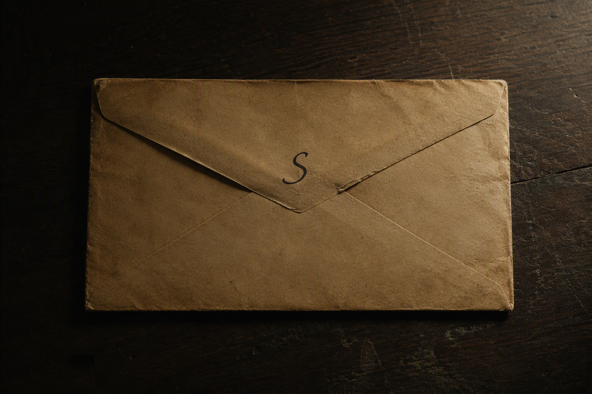
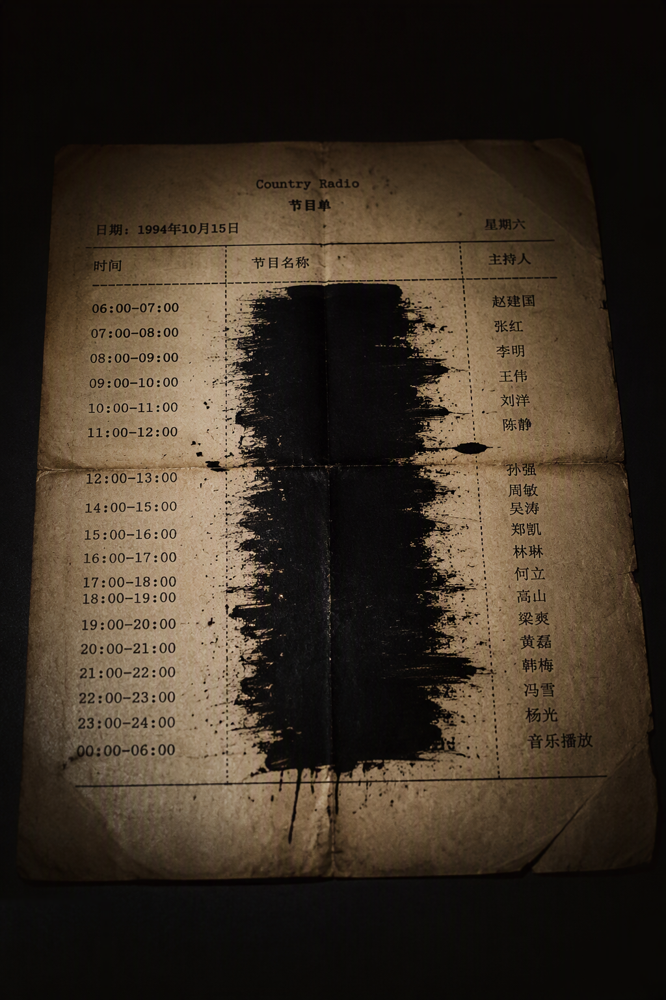
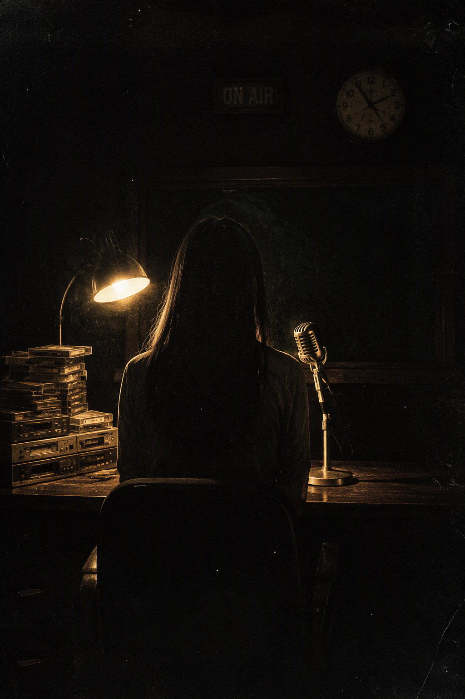

夹层里没有信纸。夜莺把信封凑到灯下看了很久，说里面有字，可夹层里太黑了，灯照不进去。
"把光挪过去。"她说，"角落里压着四个字。找到它们，按序号念出来。"



导播间的灯，是台里最旧的一盏。老值班员说，那盏灯下面从来坐不住人——每一任主播下播的时候都觉得，灯下还坐着一个。
夜莺不信。她在这盏灯下播了六年。
她不见的那晚，设备还开着，话筒还是热的，椅子还在慢慢地转。桌上压着一封没有地址的信。
值班员说，那晚三点半，他听见夜莺对着话筒，念了四个字。是哪四个字，他不肯复述。他说：你自己去找。找到了，就念出来——
替她念完。
夹层里一片黑。把光挪过去。
邮票上的脸，刚才眨了一下